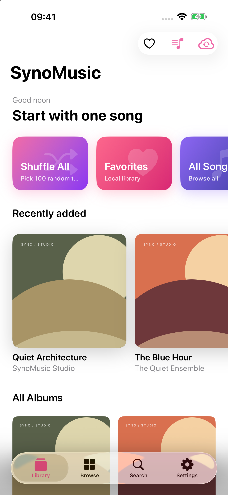
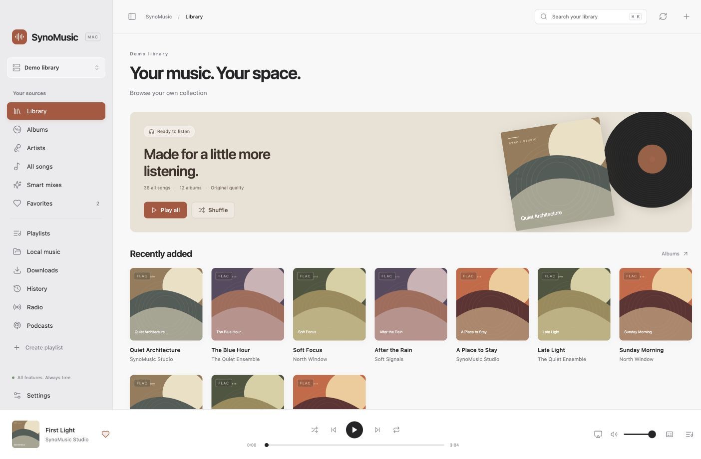
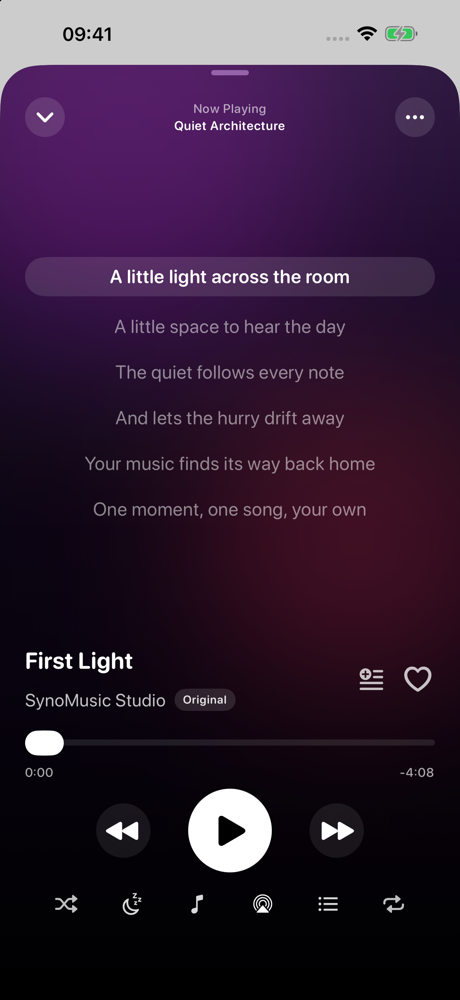

A LIBRARY THAT FEELS LIKE YOURS
Collected with care.
Played with joy.
Albums, artists, favorites, smart mixes and playlists. All the ways you find your music, together.

YOUR COLLECTION. YOUR CONNECTION.
The music you’ve collected. The albums you come back to. A beautiful place to hear them all — on iPhone, iPad and Mac.
Every feature is free. A little support is always optional.


01 / EXPERIENCE
Your albums stay center stage. The details stay out of the way. Settle into a familiar library, follow every lyric, and let the next song find you.
A LIBRARY THAT FEELS LIKE YOURS
Albums, artists, favorites, smart mixes and playlists. All the ways you find your music, together.

IN STEP WITH EVERY WORD
Synced lyrics, your own edits, adjustable text and timing. Find your place in the song.
Original demo lyrics shown.Keep authorized music offline, organize a download queue, and import the files you already own.
Background audio, AirPlay, an equalizer, crossfade and a sleep timer. The little things that make a long listen better.
Connect directly to servers you authorize. Credentials stay in your system Keychain. No SynoMusic account required.
02 / THE APPS
One love for your music. A different kind of care for every screen.
03 / FREE & OPEN
A personal music app should feel personal — including the choice to support it. Every feature is available to everyone. If SynoMusic makes your day a little better, you can leave the developer a tip inside the iPhone or iPad app.
USD reference prices. Local prices appear in the app. One-time consumable support, with no automatic renewal or extra features.
Make yourself at home on GitHub ↗04 / A FEW GOOD QUESTIONS
You can connect a supported server or use your own local audio files. SynoMusic does not include a commercial music catalog or a streaming subscription.
Synology Audio Station, Plex, Jellyfin, Emby, WebDAV and SMB. Use only accounts, tokens, files and content you are authorized to access.
No. All features are free. Optional support purchases thank the developer; they do not unlock features and do not renew automatically.
The new app no longer requires a subscription. An existing Apple subscription is managed separately and is not automatically cancelled by this update. Use “Manage previous subscriptions” in Settings to review or cancel it.
Report an issue or join the discussion on our public GitHub repository.
SYNO / MUSIC